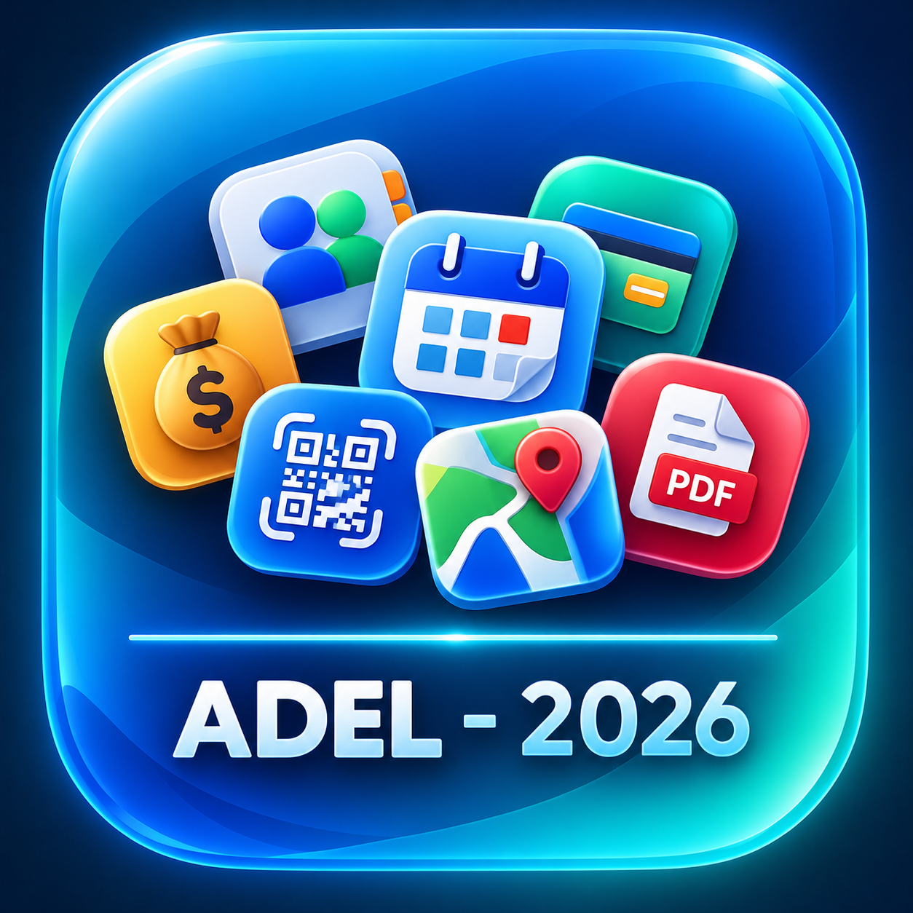

التقويم العائلي
تنظيم المواعيد والأحداث العائلية ومشاركتها مع دعم التاريخ الهجري.
فتح البرنامج
مجموعة من البرامج والأدوات العربية البسيطة التي طورتها لتنظيم الأعمال والمهام اليومية، وتعمل مباشرة من المتصفح.
تنظيم المواعيد والأحداث العائلية ومشاركتها مع دعم التاريخ الهجري.
فتح البرنامجإدارة جهات الاتصال والبحث فيها مع دعم ملفات VCF وCSV.
فتح البرنامجتسجيل المصروفات الشخصية ومتابعتها بطريقة بسيطة وسريعة.
فتح البرنامجإنشاء رموز QR للروابط والنصوص وأرقام الهاتف وشبكات Wi-Fi.
فتح البرنامجتحويل المواقع المحفوظة وروابط Google Maps إلى خرائط Apple.
فتح البرنامجإدارة اشتراكات العائلة والإيرادات والمصروفات ومتابعة الصندوق.
فتح البرنامجتقليص وضغط ملفات PDF داخل المتصفح مع المحافظة على الخصوصية.
فتح البرنامج